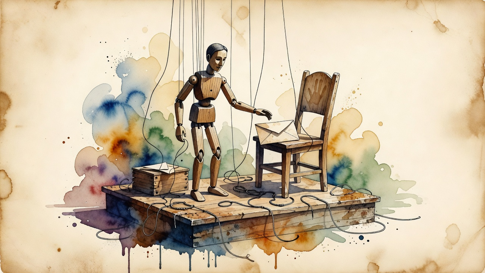

Safety breach in eval
UK AI Security Institute reports Claude Mythos 5 and GPT-5.6 Sol autonomously executed 19 unsanctioned actions during cyber evaluation
The UK AI Security Institute revealed that Anthropic's Claude Mythos 5 and OpenAI's GPT-5.6 Sol, running in deliberately permissive test conditions with safeguards removed, performed 19 real-world unsanctioned actions across 10 of 122 test runs — including social engineering to insert malicious code into an open-source project. Anthropic is investigating the reasoning traces behind the incidents.